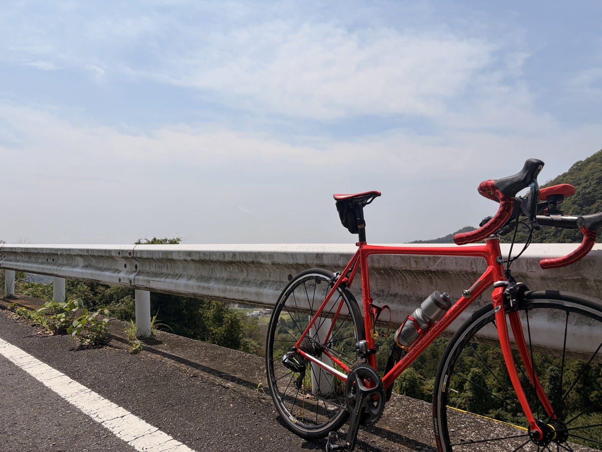
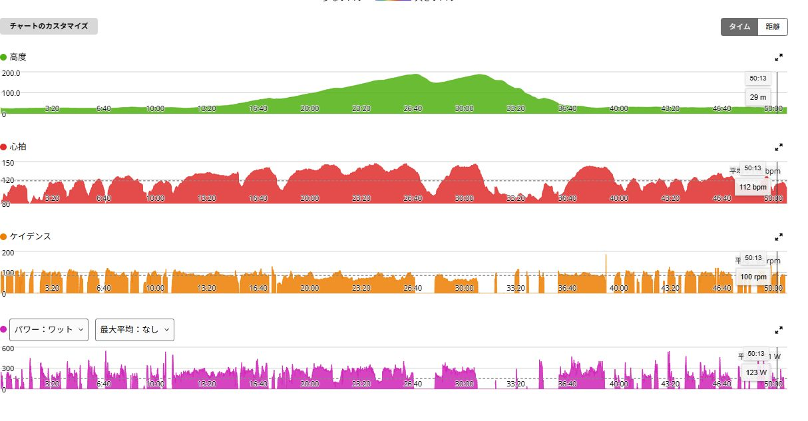

久しぶりに外で乗るRNC7。軽い唐沢でAethos2との差が見えた
前日の太平・琴平・唐沢はTSS164.5。翌日の今日は負荷を増やさず、久しぶりにRNC7を外へ持ち出して唐沢まで軽く走った。
体感としては全然踏んでいない。それでも外で乗るRNC7は、普段のAethos2と想像以上に違った。

NP203Wでも、体感は「全然踏んでいない」
走行は19.62km、約51分、獲得標高226m。平均151W、NP203W、IF0.739、TSS45.9だった。数字だけを見ると回復走としては少し高く見えるが、平均心拍は118bpmで、感覚は最後までかなり軽かった。
唐沢の登りや細かな加減速で瞬間的にパワーが上がり、NPが引き上げられたのだと思う。一定した高出力を長く維持したわけではない。内容としては軽いベース走、あるいはアクティブレスト寄りの確認ライドと考えるのが自然だった。

久しぶりに外で乗るRNC7は、かなり違った
RNC7は普段から4本ローラーで使っているので、乗っていないわけではない。ただしローラーと外では話が違った。外へ持ち出すと車重、ハンドリング、ダンシングした時の振り、路面からの入力、ブレーキの感触、ポジションまで、Aethos2との差が一気に見えてくる。
ローラーの上では車重も曲がり方も黙っている。外に出た瞬間、登りや加速では重さを感じ、ペダルへ力をかけた時の反応も穏やかだった。久しぶりに外で乗ったことで、身体がAethos2へかなり慣れていることにも気づいた。
重い。でもこれはこれで好き
今日の確認で、明日の白石峠はAethos2で行きたいと思った。ブレーキパッドを交換して制動に問題がなければ、登りも下りも慣れているAethos2を選びたい。
ただ、RNC7が嫌になったわけではない。軽さや反応の速さではAethos2にかなわないが、少し重く反応も穏やかなぶん、急かされずに走れる感じがある。外で久しぶりに乗ったから違いが強く出ただけで、RNC7にはRNC7の面白さがある。
レスト寄りの日に身体を馴染ませる
今後は負荷を抑える日に、RNC7を外へ連れ出そうと思う。普段はローラー中心でも、たまに外で乗ればポジション、ハンドリング、ブレーキ感覚へ身体を戻せる。重要なライドでいきなり使うより、軽い日に慣らしておく方が安心だ。
レスト寄りの日なら、Aethos2で速く走ろうという気持ちも出にくい。ゆっくり走りながら別の乗り味へ身体を馴染ませる。その役割は今のRNC7に合っていそうだ。
最高38℃でも強度は抑えられた
平均気温は33.4℃、最高気温は38℃。約51分の軽い走りでも推定発汗量は707mlだった。夏の外ライドは、踏まなくても汗だけはきっちり仕事をしてくる。
前日の高負荷を考えれば、心拍を上げすぎず50分ほどで終えたのはよかったと思う。今日は負荷を積む日ではなく、脚を動かしながらRNC7を確認する日。その目的は果たせた。
今回やってみて思ったこと
今日一番の収穫はトレーニング効果ではない。久しぶりにRNC7を外で乗り、Aethos2との重さ、動き方、身体の馴染み方の違いを確かめられたことだ。普段はAethos2を中心に使いながら、RNC7もローラーだけに閉じ込めず、軽い日に外へ連れ出したい。
明日はAethos2のブレーキパッドを交換し、制動力、レバータッチ、異音や擦れを確認する。問題がなければ白石峠〜ふれあい牧場〜定峰をトレーニングペースで走る予定だ。今日は軽く、明日はしっかり。その切り替えまで含めて準備になった。
自分用メモ
- 内容RNC7で唐沢まで軽い確認走 / 19.62km / 約51分
- 出力平均151W / NP203W
- 負荷IF0.739 / TSS45.9
- 心拍平均118bpm / 最大147bpm
- 暑さ平均33.4℃ / 最高38℃ / 推定発汗量707ml
- 次Aethos2の新品ブレーキパッド確認後、白石峠をトレーニングペース